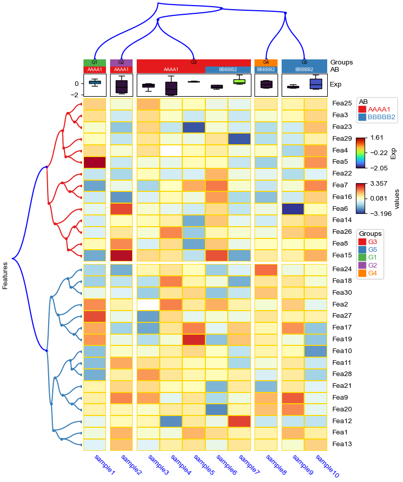
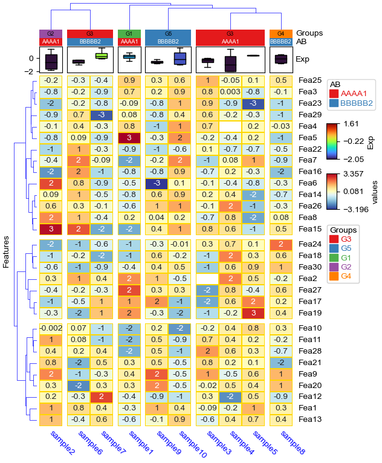

[1]:
import os,sys
%matplotlib inline
import matplotlib.pylab as plt
import pickle
plt.rcParams['figure.dpi'] = 100
plt.rcParams['savefig.dpi']=300
# sys.path.append(os.path.expanduser("~/Projects/Github/PyComplexHeatmap"))
from PyComplexHeatmap import *
[2]:
#set font to Arial using the following code
plt.rcParams['font.family']='sans serif'
plt.rcParams['font.sans-serif']='Arial'
# set pdf.fonttype to 42
plt.rcParams['pdf.fonttype']=42
Generate dataset¶
[3]:
#Generate example dataset (random)
df = pd.DataFrame(['GroupA'] * 5 + ['GroupB'] * 5, columns=['AB'])
df['CD'] = ['C'] * 3 + ['D'] * 3 + ['G'] * 4
df['EF'] = ['E'] * 6 + ['F'] * 2 + ['H'] * 2
df['F'] = np.random.normal(0, 1, 10)
df.index = ['sample' + str(i) for i in range(1, df.shape[0] + 1)]
df_box = pd.DataFrame(np.random.randn(10, 4), columns=['Gene' + str(i) for i in range(1, 5)])
df_box.index = ['sample' + str(i) for i in range(1, df_box.shape[0] + 1)]
df_bar = pd.DataFrame(np.random.uniform(0, 10, (10, 2)), columns=['TMB1', 'TMB2'])
df_bar.index = ['sample' + str(i) for i in range(1, df_box.shape[0] + 1)]
df_scatter = pd.DataFrame(np.random.uniform(0, 10, 10), columns=['Scatter'])
df_scatter.index = ['sample' + str(i) for i in range(1, df_box.shape[0] + 1)]
df_heatmap = pd.DataFrame(np.random.randn(30, 10), columns=['sample' + str(i) for i in range(1, 11)])
df_heatmap.index = ["Fea" + str(i) for i in range(1, df_heatmap.shape[0] + 1)]
df_heatmap.iloc[1, 2] = np.nan
Add selected rows labels¶
[4]:
#Annotate the rows with average > 0.3
df_rows = df_heatmap.apply(lambda x:x.name if x.sample4 > 0.5 else None,axis=1)
df_rows=df_rows.to_frame(name='Selected')
df_rows['XY']=df_rows.index.to_series().apply(lambda x:'A' if int(x.replace('Fea',''))>=15 else 'B')
row_ha = HeatmapAnnotation(
Scatter=anno_scatterplot(df_heatmap.sample4.apply(lambda x:round(x,2)),
height=12,cmap='jet',legend=False),
Bar=anno_barplot(df_heatmap.sample4.apply(lambda x:round(x,2)),
height=15,cmap='rainbow',legend=False),
selected=anno_label(df_rows,colors='red',relpos=(-0.05,0.4)),
label_kws={'rotation':30,'horizontalalignment':'left','verticalalignment':'bottom'},
axis=0,verbose=0)
col_ha = HeatmapAnnotation(label=anno_label(df.AB, merge=True,rotation=10),
AB=anno_simple(df.AB,add_text=True),axis=1,
CD=anno_simple(df.CD,add_text=True),
EF=anno_simple(df.EF,add_text=True,
legend_kws={'frameon':True}),
G=anno_boxplot(df_box, cmap='jet',legend=False),
verbose=0)
plt.figure(figsize=(5.5, 6.5))
cm = ClusterMapPlotter(data=df_heatmap, top_annotation=col_ha,right_annotation=row_ha,
col_cluster=True,row_cluster=True,
col_split=df.AB,row_split=2,
col_split_gap=0.5,row_split_gap=0.8,
label='values',row_dendrogram=True,
show_rownames=False,show_colnames=True,
tree_kws={'row_cmap': 'Set1'},verbose=0,legend_gap=5,
cmap='RdYlBu_r',xticklabels_kws={'labelrotation':-90,'labelcolor':'blue'})
plt.savefig("example0.pdf", bbox_inches='tight')
plt.show()

Add float annotations on the top of heatmap cells¶
[5]:
#Annotate the rows with average > 0.3
df_rows = df_heatmap.apply(lambda x:x.name if x.sample4 > 0.5 else None,axis=1)
df_rows=df_rows.to_frame(name='Selected')
df_rows['XY']=df_rows.index.to_series().apply(lambda x:'A' if int(x.replace('Fea',''))>=15 else 'B')
row_ha = HeatmapAnnotation(S4=anno_simple(df_heatmap.sample4.apply(lambda x:round(x,2)),
add_text=True,height=10,
text_kws={'rotation':0,'fontsize':10,'color':'black'}),
# Scatter=anno_scatterplot(df_heatmap.sample4.apply(lambda x:round(x,2)),
# height=10),
Test=anno_barplot(df_heatmap.sample4.apply(lambda x:round(x,2)),
height=18,cmap='rainbow'),
selected=anno_label(df_rows,colors='red'),
axis=0,verbose=0,label_kws={'rotation':0,'horizontalalignment':'left','verticalalignment':'bottom'})
col_ha = HeatmapAnnotation(label=anno_label(df.AB, merge=True,rotation=15),
AB=anno_simple(df.AB,add_text=True),axis=1,
CD=anno_simple(df.CD,add_text=True),
EF=anno_simple(df.EF,add_text=True,
legend_kws={'frameon':False}),
Exp=anno_boxplot(df_box, cmap='turbo'),
verbose=0) #verbose=0 will turn off the log.
print(df)
print(df_box.mean(axis=1))
print(df_heatmap)
plt.figure(figsize=(6, 8))
cm = ClusterMapPlotter(data=df_heatmap, top_annotation=col_ha,right_annotation=row_ha,
col_split=df.AB,
row_split=df_rows.XY, col_split_gap=0.5,row_split_gap=1,
col_cluster=True,row_cluster=True,
label='values',row_dendrogram=False,show_rownames=True,show_colnames=True,
tree_kws={'row_cmap': 'Set1'},verbose=0,legend_gap=7,
annot=True,linewidths=0.05,linecolor='gold',cmap='RdYlBu_r',
xticklabels_kws={'labelrotation':-45,'labelcolor':'blue'})
plt.show()
print(cm.row_order)
print(cm.col_order)
AB CD EF F
sample1 GroupA C E 0.041166
sample2 GroupA C E 0.959873
sample3 GroupA C E -1.869846
sample4 GroupA D E -0.752948
sample5 GroupA D E -1.601491
sample6 GroupB D E 0.013185
sample7 GroupB G F -0.269161
sample8 GroupB G F -1.384363
sample9 GroupB G H -0.042121
sample10 GroupB G H -0.880758
sample1 0.034792
sample2 -0.936043
sample3 -0.588188
sample4 -0.131987
sample5 0.996399
sample6 0.203871
sample7 0.133362
sample8 -0.761092
sample9 -0.614650
sample10 1.166296
dtype: float64
sample1 sample2 sample3 sample4 sample5 sample6 sample7 \
Fea1 -1.203266 -0.079561 -0.241112 0.678108 1.641739 0.205477 -0.204343
Fea2 0.380102 -0.253929 NaN -0.421765 0.483096 0.960200 -0.535725
Fea3 1.296494 -1.385154 0.808768 -2.288282 -0.308189 -0.586296 -2.024986
Fea4 -0.195339 0.618966 -0.474764 -0.094428 -1.881495 1.036833 -0.083496
Fea5 0.436262 -0.775236 -2.304031 0.109811 -0.065291 0.985106 0.239187
Fea6 1.123001 -0.081716 0.946771 1.275396 1.103014 0.592108 -0.248839
Fea7 -0.564894 -0.109834 -0.337860 0.217794 2.002920 0.125166 -0.876661
Fea8 -0.197085 0.128340 0.234406 -0.000406 -1.415458 -0.114630 0.280371
Fea9 1.564680 -0.783277 0.407376 0.840245 -1.618599 0.383109 -1.305986
Fea10 -0.018886 -0.260670 0.236575 -0.239004 -0.728754 2.291780 0.088433
Fea11 -2.003715 1.265140 -0.801365 1.368808 -0.434790 -1.055421 -0.813062
Fea12 0.652983 -1.352101 1.420992 -1.965765 0.122986 1.704285 -1.124753
Fea13 0.296348 1.156562 0.205935 0.274689 0.265589 -1.211546 -0.042167
Fea14 -0.176738 1.772185 -0.193652 0.112411 -0.762855 0.348734 0.207453
Fea15 -2.595612 -0.305301 1.616280 -0.595781 0.118172 -1.324900 -0.137349
Fea16 0.212637 0.455665 0.169458 1.078643 0.341506 -1.549540 -0.252180
Fea17 -0.964065 0.947676 -0.122432 -0.368137 0.958246 0.363409 -0.242551
Fea18 0.942111 -0.217674 -1.103365 0.111151 0.425768 -0.534728 0.293538
Fea19 1.408831 0.357961 0.477340 -1.888822 -0.613831 0.461100 -1.932899
Fea20 -0.295064 -0.909301 -0.666234 -1.115509 -0.562876 -0.006934 -0.076479
Fea21 0.409135 0.524537 -0.469455 -1.039739 0.356893 -1.596688 0.059283
Fea22 -0.058357 -0.268428 -0.793232 0.585984 -0.778892 -0.196127 -0.533793
Fea23 0.430225 -0.542742 1.354629 0.176574 -0.132829 -0.820455 1.231781
Fea24 2.695756 -0.769209 0.506434 -0.485851 0.344015 0.298866 1.828340
Fea25 0.606251 0.169038 -0.510038 0.470912 0.192622 1.288583 1.718190
Fea26 1.023618 1.254691 -0.146448 -1.184963 -0.636950 -0.085080 -1.312106
Fea27 -1.026203 -0.937535 -0.103053 -0.351946 1.163913 -0.909004 1.568380
Fea28 -1.667121 -0.882195 1.567017 -0.514906 0.785101 -0.858995 -0.317124
Fea29 2.855934 0.435057 0.901220 -0.832713 1.063917 1.050228 -1.117258
Fea30 -0.730336 -1.139462 -0.024637 -0.772137 0.701197 0.539107 -0.099881
sample8 sample9 sample10
Fea1 0.077069 -0.971598 -1.072365
Fea2 0.124258 -0.191036 0.096401
Fea3 1.988701 0.844007 0.259164
Fea4 0.014393 0.816378 -0.924364
Fea5 0.756482 -0.337079 -0.380881
Fea6 -0.517664 0.560224 1.478059
Fea7 1.330375 -0.688962 0.490885
Fea8 -3.515566 0.200291 0.634236
Fea9 -0.821458 0.455543 0.586710
Fea10 0.113389 -0.299350 1.206219
Fea11 -0.110077 -0.293857 0.396311
Fea12 -1.664957 0.799353 -1.165870
Fea13 0.722178 -1.775098 1.196336
Fea14 0.143996 -0.347282 -0.930438
Fea15 0.691158 -0.705634 0.839098
Fea16 -0.711894 1.352966 1.313872
Fea17 -0.612526 -0.725304 -1.160466
Fea18 1.015000 0.781602 -0.786940
Fea19 -0.050686 0.697051 1.464805
Fea20 0.006416 -0.805397 -0.584170
Fea21 -0.056766 0.033261 1.073755
Fea22 -0.282189 1.013630 0.079623
Fea23 -0.592603 -1.031129 0.117042
Fea24 -0.192338 -0.343648 0.689977
Fea25 -1.744745 0.146626 0.924021
Fea26 2.414146 -0.252008 -0.039392
Fea27 -2.905441 -0.305093 -0.079954
Fea28 0.827211 -0.471744 1.460052
Fea29 2.012989 -0.582349 1.058286
Fea30 1.164247 0.432179 -1.107820

[['Fea18', 'Fea20', 'Fea30', 'Fea21', 'Fea19', 'Fea26', 'Fea29', 'Fea17', 'Fea15', 'Fea28', 'Fea16', 'Fea22', 'Fea25', 'Fea27', 'Fea23', 'Fea24'], ['Fea1', 'Fea7', 'Fea11', 'Fea13', 'Fea8', 'Fea6', 'Fea9', 'Fea3', 'Fea10', 'Fea2', 'Fea12', 'Fea5', 'Fea4', 'Fea14']]
[['sample7', 'sample6', 'sample9', 'sample8', 'sample10'], ['sample2', 'sample4', 'sample1', 'sample3', 'sample5']]
Only plot the annotations¶
[6]:
df = pd.DataFrame(['AAAA1'] * 5 + ['BBBBB2'] * 5, columns=['AB'])
df['CD'] = ['C'] * 3 + ['D'] * 3 + ['G'] * 4
df['F'] = np.random.normal(0, 1, 10)
df.index = ['sample' + str(i) for i in range(1, df.shape[0] + 1)]
df_box = pd.DataFrame(np.random.randn(10, 4), columns=['Gene' + str(i) for i in range(1, 5)])
df_box.index = ['sample' + str(i) for i in range(1, df_box.shape[0] + 1)]
df_bar = pd.DataFrame(np.random.uniform(0, 10, (10, 2)), columns=['TMB1', 'TMB2'])
df_bar.index = ['sample' + str(i) for i in range(1, df_box.shape[0] + 1)]
df_scatter = pd.DataFrame(np.random.uniform(0, 10, 10), columns=['Scatter'])
df_scatter.index = ['sample' + str(i) for i in range(1, df_box.shape[0] + 1)]
df_bar1 = pd.DataFrame(np.random.uniform(0, 10, (10, 2)), columns=['T1-A', 'T1-B'])
df_bar1.index = ['sample' + str(i) for i in range(1, df_box.shape[0] + 1)]
df_bar2 = pd.DataFrame(np.random.uniform(0, 10, (10, 2)), columns=['T2-A', 'T2-B'])
df_bar2.index = ['sample' + str(i) for i in range(1, df_box.shape[0] + 1)]
df_bar3 = pd.DataFrame(np.random.uniform(0, 10, (10, 2)), columns=['T3-A', 'T3-B'])
df_bar3.index = ['sample' + str(i) for i in range(1, df_box.shape[0] + 1)]
df_bar3.iloc[5,0]=np.nan
df_bar4 = pd.DataFrame(np.random.uniform(0, 10, (10, 1)), columns=['T4'])
df_bar4.index = ['sample' + str(i) for i in range(1, df_box.shape[0] + 1)]
df_bar4.iloc[7,0]=np.nan
print(df)
print(df_box)
print(df_scatter)
print(df_bar)
print(df_bar1)
print(df_bar2)
print(df_bar3)
print(df_bar4)
AB CD F
sample1 AAAA1 C -0.026307
sample2 AAAA1 C -0.395643
sample3 AAAA1 C -0.786487
sample4 AAAA1 D 0.173850
sample5 AAAA1 D -1.071421
sample6 BBBBB2 D -1.043463
sample7 BBBBB2 G -1.226401
sample8 BBBBB2 G 0.747444
sample9 BBBBB2 G 0.460356
sample10 BBBBB2 G 0.282849
Gene1 Gene2 Gene3 Gene4
sample1 -0.853183 0.631217 -0.030973 -0.357883
sample2 -0.656675 -0.837796 0.453728 0.974585
sample3 0.090757 1.227384 0.442114 0.444173
sample4 -0.188224 0.894303 -0.874885 -0.162201
sample5 0.752413 -1.218948 1.067712 -1.317948
sample6 -0.390086 0.086027 0.260066 0.257062
sample7 -0.051257 -0.744527 0.407436 0.040284
sample8 0.414875 -1.308165 -1.587950 0.308569
sample9 -0.849368 0.225082 -1.668720 -0.863580
sample10 -1.700491 -1.054359 -2.008532 0.345974
Scatter
sample1 8.926229
sample2 6.445206
sample3 7.429726
sample4 7.101263
sample5 7.754254
sample6 0.218085
sample7 6.458214
sample8 6.451321
sample9 3.113497
sample10 7.537975
TMB1 TMB2
sample1 6.280523 0.406895
sample2 3.468969 2.084913
sample3 5.017505 2.139237
sample4 2.416229 1.613466
sample5 2.001193 5.914073
sample6 8.174840 7.973193
sample7 5.650703 0.403919
sample8 8.405934 5.604030
sample9 6.800334 3.935694
sample10 2.994112 6.395444
T1-A T1-B
sample1 8.584275 8.853558
sample2 0.636989 5.070679
sample3 6.786599 4.316755
sample4 1.651424 8.277667
sample5 1.419623 0.762191
sample6 2.981312 4.083552
sample7 6.068872 6.426366
sample8 7.661341 8.845806
sample9 9.712715 8.158111
sample10 7.244458 5.027222
T2-A T2-B
sample1 7.639668 6.172025
sample2 4.323040 5.601730
sample3 2.224193 0.309402
sample4 8.251683 5.404116
sample5 3.241835 1.705130
sample6 5.437906 9.172949
sample7 6.130964 4.568890
sample8 4.589852 5.383067
sample9 7.848427 9.407374
sample10 5.017549 1.624143
T3-A T3-B
sample1 4.941890 5.103739
sample2 1.563737 4.938399
sample3 1.807464 6.476983
sample4 4.408591 9.186721
sample5 2.728193 3.306031
sample6 NaN 8.925639
sample7 0.208465 2.236787
sample8 7.247111 1.029007
sample9 8.860835 0.213733
sample10 1.484791 3.263982
T4
sample1 8.488194
sample2 2.663690
sample3 0.297875
sample4 5.374527
sample5 4.090912
sample6 6.011607
sample7 7.589267
sample8 NaN
sample9 4.375677
sample10 3.054896
[7]:
plt.figure(figsize=(4, 8))
col_ha = HeatmapAnnotation(label=anno_label(df.AB, merge=True,rotation=15),
AB=anno_simple(df.AB,add_text=True,legend=True), axis=1,
CD=anno_simple(df.CD, add_text=True,legend=True,text_kws={'color':'black'}),
Exp=anno_boxplot(df_box, cmap='turbo',legend=True),
Scatter=anno_scatterplot(df_scatter),
TMB_bar=anno_barplot(df_bar,legend=True,cmap='Set1'),
Bar1=anno_barplot(df_bar1,legend=True,cmap='Dark2'),
Bar4=anno_barplot(df_bar4,legend=True,cmap='turbo'),
Bar2=anno_barplot(df_bar2,legend=True,cmap='tab10'),
Bar3=anno_barplot(df_bar3,legend=True,cmap='Paired'),
plot=True,legend=True,legend_gap=5,hgap=0.5)
col_ha.show_ticklabels(df.index.tolist(),fontdict={'color':'blue'},rotation=-30)
plt.show()
Starting plotting HeatmapAnnotations
Collecting annotation legends..

Change orentation down and add extra space¶
[8]:
plt.figure(figsize=(4, 8))
row_ha = HeatmapAnnotation(
TMB_bar=anno_barplot(df_bar,legend=True,cmap='Set1'),
Bar1=anno_barplot(df_bar1,legend=True,cmap='Dark2'),
Bar4=anno_barplot(df_bar4,legend=True,cmap='turbo'),
Bar2=anno_barplot(df_bar2,legend=True,cmap='tab10'),
Bar3=anno_barplot(df_bar3,legend=True,cmap='Paired'),
Scatter=anno_scatterplot(df_scatter),
Exp=anno_boxplot(df_box, cmap='turbo',legend=True),
CD=anno_simple(df.CD, colors={'C': 'red', 'D': 'gray', 'G': 'yellow'},
add_text=True,legend=True,text_kws={'color':'black'}),
AB=anno_simple(df.AB,add_text=True,legend=True),
label=anno_label(df.AB, merge=True,rotation=-15),
plot=True,plot_legend=False,legend_hpad=13,axis=1,hgap=1
)
row_ha.show_ticklabels(df.index.tolist(),fontdict={'color':'blue'},rotation=30)
plt.show()
# Here, we can use hgap (when axis=1) or wgap (when axis=0) to control the widh of height space between different annotations.
Starting plotting HeatmapAnnotations

Change orentation to the left¶
[9]:
plt.figure(figsize=(8, 4))
row_ha = HeatmapAnnotation(label=anno_label(df.AB, merge=True,rotation=15),
AB=anno_simple(df.AB,add_text=True,legend=True),
CD=anno_simple(df.CD,add_text=True,legend=True),
Exp=anno_boxplot(df_box, cmap='turbo',legend=True),
Scatter=anno_scatterplot(df_scatter),
TMB_bar=anno_barplot(df_bar,legend=True,cmap='Set1'),
Bar1=anno_barplot(df_bar1,legend=True,cmap='Dark2'),
Bar4=anno_barplot(df_bar4,legend=True,cmap='turbo'),
Bar2=anno_barplot(df_bar2,legend=True,cmap='tab10'),
Bar3=anno_barplot(df_bar3,legend=True,cmap='Paired'),
plot=True,legend=True,legend_gap=5,
axis=0,legend_hpad=20
)
row_ha.show_ticklabels(df.index.tolist(),fontdict={'color':'blue'},rotation=0)
plt.show()
Starting plotting HeatmapAnnotations
Collecting annotation legends..
Incresing ncol
Incresing ncol
Incresing ncol
More than 3 cols is not supported
Legend too long, generating a new column..

Change orentation to the right¶
[10]:
plt.figure(figsize=(8, 4))
row_ha = HeatmapAnnotation(
TMB_bar=anno_barplot(df_bar,legend=True,cmap='Set1'),
Bar1=anno_barplot(df_bar1,legend=True,cmap='Dark2'),
Bar4=anno_barplot(df_bar4,legend=True,cmap='turbo'),
Bar2=anno_barplot(df_bar2,legend=True,cmap='tab10'),
Bar3=anno_barplot(df_bar3,legend=True,cmap='Paired'),
Scatter=anno_scatterplot(df_scatter),
Exp=anno_boxplot(df_box, cmap='turbo',legend=True),
CD=anno_simple(df.CD, colors={'C': 'red', 'D': 'gray', 'G': 'green'},
add_text=True,legend=True,text_kws={'rotation':-90}),
AB=anno_simple(df.AB,add_text=True,legend=True,text_kws={'rotation':-90,'color':'black'}),
label=anno_label(df.AB, merge=True,rotation=15),
plot=True,legend=True,legend_hpad=13,legend_gap=5,axis=0
)
row_ha.show_ticklabels(df.index.tolist(),fontdict={'color':'black'},rotation=0)
plt.show()
Starting plotting HeatmapAnnotations
Collecting annotation legends..
Incresing ncol
Incresing ncol
Incresing ncol
More than 3 cols is not supported
Legend too long, generating a new column..

Changing orientation using parameter orientation¶
By Default, if there is no anno_label in the annotation, the oriention would be determined by parameter orientation.
[11]:
plt.figure(figsize=(8, 4))
col_ha = HeatmapAnnotation(
AB=anno_simple(df.AB,add_text=True,legend=True),
CD=anno_simple(df.CD,add_text=True,legend=True),
Exp=anno_boxplot(df_box, cmap='turbo',legend=True),
Scatter=anno_scatterplot(df_scatter),
TMB_bar=anno_barplot(df_bar,legend=True,cmap='Set1'),
Bar1=anno_barplot(df_bar1,legend=True,cmap='Dark2'),
Bar4=anno_barplot(df_bar4,legend=True,cmap='turbo'),
Bar2=anno_barplot(df_bar2,legend=True,cmap='tab10'),
Bar3=anno_barplot(df_bar3,legend=True,cmap='Paired'),
plot=True,legend=True,axis=0,
legend_gap=5,orientation='left',
)
plt.show()
Starting plotting HeatmapAnnotations
Collecting annotation legends..
Incresing ncol
Incresing ncol
Incresing ncol
More than 3 cols is not supported
Legend too long, generating a new column..

[12]:
plt.figure(figsize=(8, 4))
col_ha = HeatmapAnnotation(
AB=anno_simple(df.AB,add_text=True,legend=True,
text_kws={'rotation':-90,'fontsize':14,'color':'black'}),
CD=anno_simple(df.CD,add_text=True,legend=True,
text_kws={'rotation':-90,'fontsize':14,'color':'white'}),
Exp=anno_boxplot(df_box, cmap='turbo',legend=True),
Scatter=anno_scatterplot(df_scatter),
TMB_bar=anno_barplot(df_bar,legend=True,cmap='Set1'),
Bar1=anno_barplot(df_bar1,legend=True,cmap='Dark2'),
Bar4=anno_barplot(df_bar4,legend=True,cmap='turbo'),
Bar2=anno_barplot(df_bar2,legend=True,cmap='tab10'),
Bar3=anno_barplot(df_bar3,legend=True,cmap='Paired'),
plot=True,legend=True,axis=0,wgap=3,
legend_gap=5,orientation='right',
)
plt.show()
Starting plotting HeatmapAnnotations
Collecting annotation legends..
Incresing ncol
Incresing ncol
Incresing ncol
More than 3 cols is not supported
Legend too long, generating a new column..

Add multiple heatmap annotations using for loop¶
Typically, we can create a heatmap annotatin using the following code:
col_ha = HeatmapAnnotation(
Group=anno_simple(df_cols.hypomethylated_samples,colors=sample_group_color_dict,legend=True),
CellType=anno_simple(df_cols.CellType,colors=ct_color_dict,legend=ct_legend),
M1=anno_simple(df_cols['M1'],cmap='jet',legend=lgd,vmax=1,vmin=0,legend_kws={'label':'M1'}),
verbose=0,label_side='right',label_kws={'horizontalalignment':'left'})
But what if we have many annotations, for example:
col_ha = HeatmapAnnotation(
Group=anno_simple(df_cols.hypomethylated_samples,colors=sample_group_color_dict,legend=True),
CellType=anno_simple(df_cols.CellType,colors=ct_color_dict,legend=ct_legend),
M1=anno_simple(df_cols['M1'],cmap='jet',legend=lgd,vmax=1,vmin=0,legend_kws={'label':'M1'}),
M2=anno_simple(df_cols['M2'],cmap='jet',legend=lgd,vmax=1,vmin=0,legend_kws={'label':'M2'}),
M3=anno_simple(df_cols['M3'],cmap='jet',legend=lgd,vmax=1,vmin=0,legend_kws={'label':'M3'}),
.....
verbose=0,label_side='right',label_kws={'horizontalalignment':'left'})
In this case, we can create an dict including the name and annotation as keys and values:
col_ha_dict={
'Group':anno_simple(df_cols.hypomethylated_samples,colors=sample_group_color_dict,legend=True),
'CellType':anno_simple(df_cols.CellType,colors=ct_color_dict,legend=ct_legend)
}
for col in sample_cols:
col_ha_dict[col]=anno_simple(df_cols[col],cmap='jet',legend=lgd,vmax=1,vmin=0,legend_kws={'label':col})
col_ha = HeatmapAnnotation(**col_ha_dict,
verbose=0,label_side='right',label_kws={'horizontalalignment':'left'})
Choosing Build-in colormap in PyComplexHeatmap¶
Diverging¶
exp1
exp2
meth1
meth2
diverging1
parula
[13]:
from PyComplexHeatmap.utils import get_colormap
[14]:
import numpy as np
import matplotlib as mpl
import matplotlib.pyplot as plt
cmaps = {}
gradient = np.linspace(0, 1, 256)
gradient = np.vstack((gradient, gradient))
def plot_color_gradients(category, cmap_list):
# Create figure and adjust figure height to number of colormaps
nrows = len(cmap_list)
figh = 0.35 + 0.15 + (nrows + (nrows - 1) * 0.1) * 0.22
fig, axs = plt.subplots(nrows=nrows + 1, figsize=(6.4, figh))
fig.subplots_adjust(top=1 - 0.35 / figh, bottom=0.15 / figh,
left=0.2, right=0.99)
axs[0].set_title(f'{category} colormaps', fontsize=14)
for ax, name in zip(axs, cmap_list):
ax.imshow(gradient, aspect='auto', cmap=mpl.colormaps[name])
ax.text(-0.01, 0.5, name, va='center', ha='right', fontsize=10,
transform=ax.transAxes)
# Turn off *all* ticks & spines, not just the ones with colormaps.
for ax in axs:
ax.set_axis_off()
# Save colormap list for later.
cmaps[category] = cmap_list
[15]:
plot_color_gradients('Sequential',
['exp1', 'exp2', 'meth1', 'meth2', 'diverging1', 'parula'])

Qualitative¶
cmap50
[16]:
# get_colormap("cmap50") # 50 different colors
[17]:
plot_color_gradients('Qualitative',
['cmap50'])

How to use the Build-in cmap?¶
Just set cmap=”custom_cmap”
[18]:
df = pd.DataFrame(['GroupA'] * 5 + ['GroupB'] * 5, columns=['AB'])
df['CD'] = ['C'] * 3 + ['D'] * 3 + ['G'] * 4
df['EF'] = ['E'] * 6 + ['F'] * 2 + ['H'] * 2
df['F'] = np.random.normal(0, 1, 10)
df.index = ['sample' + str(i) for i in range(1, df.shape[0] + 1)]
df_heatmap = pd.DataFrame(np.random.randn(30, 10), columns=['sample' + str(i) for i in range(1, 11)])
df_heatmap.index = ["Fea" + str(i) for i in range(1, df_heatmap.shape[0] + 1)]
df_heatmap.iloc[1, 2] = np.nan
plt.figure(figsize=(3.5, 5))
cm = ClusterMapPlotter(data=df_heatmap,
col_cluster=True,row_cluster=True,
col_split=df.AB,row_split=2,
col_split_gap=0.5,row_split_gap=0.8,
label='values',row_dendrogram=True,
show_rownames=False,show_colnames=True,
tree_kws={'row_cmap': 'Set1'},verbose=0,legend_gap=5,
cmap='parula',xticklabels_kws={'labelrotation':-90,'labelcolor':'blue'})
# plt.savefig("example0.pdf", bbox_inches='tight')
plt.show()

[19]:
plt.figure(figsize=(3.5, 5))
cm = ClusterMapPlotter(data=df_heatmap,
col_cluster=True,row_cluster=True,
col_split=df.AB,row_split=2,
col_split_gap=0.5,row_split_gap=0.8,
label='values',row_dendrogram=True,
show_rownames=False,show_colnames=True,
tree_kws={'row_cmap': 'Set1'},verbose=0,legend_gap=5,
cmap='meth2',xticklabels_kws={'labelrotation':-90,'labelcolor':'blue'})
plt.show()

[ ]: